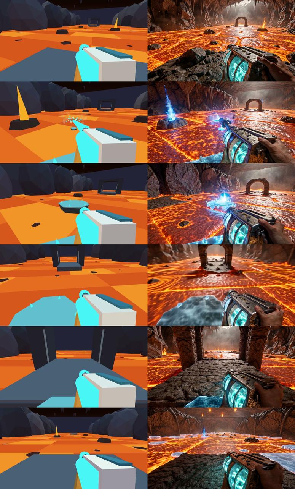
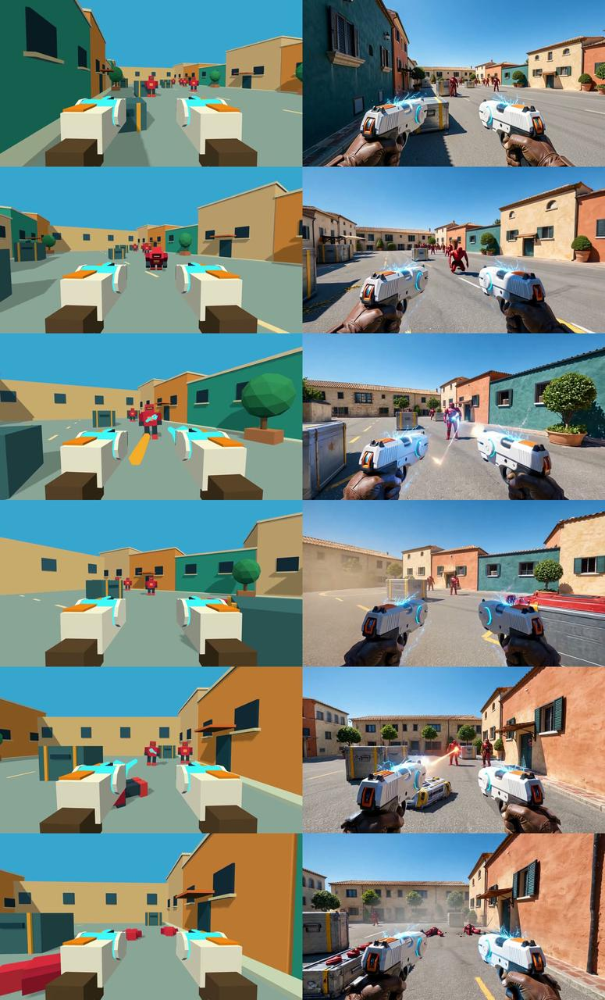

加速收益成立
EdenLive 在 H20 上采用 LightX2V 后，四个短片案例从平均 36.91 s 降至约 9.42–9.74 s，按各自边界近似快 3.8–3.9 倍。
本地实测 · 边界略有不同围绕一个核心问题：画面生成得更快之后，
对象、动作和交互关系是否仍然正确？
EdenLive 的本地 H20 实测与 SolarRenderer 的公开研究，分别回答部署效率与结构控制的问题。
阅读核心结论 ↓EdenLive 在 H20 上采用 LightX2V 后，四个短片案例从平均 36.91 s 降至约 9.42–9.74 s，按各自边界近似快 3.8–3.9 倍。
本地实测 · 边界略有不同携物上楼仍出现手物分离，水下仍有姿态与肢体漂移。更多步数有局部改善，轻量推理未显示明确任务质量提升。
定性观察 · 非自动评分SolarRenderer 支持 16 类结构，4 步保持较强结构遵循；公开 209 秒采样耗时及当前 CLI 交付路径，不构成实时系统验证。
论文与代码整理 · 未本地复现主体为 Wan2.2 5B。实验日期 2026.10.19–20；包含补充案例。下面的判断来自同步抽帧与复核记录。
参考录屏提供结构、动作和镜头；目标首帧固定外观与初始布局；提示词描述场景及阶段事件。
48-step 使用双向权重、CFG=3、Flow UniPC；4-step 为因果权重、CFG=1、Flow Euler。它们是配置级比较，不能解释为纯步数消融。

保留武器、冰冻特效与前进阶段；平台、射线和落点被重新解释，不能认定落脚位置和碰撞几何精确一致。
左：参考代理；右：BF16 4-step。约 29.875 秒。

保留街区、敌人接近、开火和倒地等阶段；数量对应、精确位置和命中时序仍需轨迹核验。
左：参考代理；右：BF16 4-step。约 29.875 秒。
EdenLive 实验同步抽帧。每图左参考、右生成；自上而下约 0 / 6 / 12 / 18 / 24 / 29.83 秒。各视频 717 帧、29.875 秒，已完整解码核验；非独占测速，未将短片速度外推到长片。
每个案例提供两段同步对比视频：步数对比与 LightX2V 对比。网页使用 480p 预览版本，适合观察动作流程。
写实图由原图生成式重绘，布局近似保留，非真实拍摄输入。4-step 保持写实外观并完成箱体交接，但脸、手和末段站姿仍变形；48-step 末段姿态较直，中段出现异常物体，不能判断整体更好。
37.17 s / 424.16 s：分别为 4-step / 48-step 生成耗时，不含加载与传输。
5B 48-step 与 14B 4-step 均缓解 5B 4-step 的主体尺度问题；人车关系和背景仍不稳，末段松手、停稳不明确，结构遵循未通过。
14B 为 832×480、77 帧、16 fps、2×H20，生成 47.4 s。与 5B 的 37.1 / 423.3 s 规格不同，不能据此比较速度优劣。
上：游戏风格；下：写实风格。左：4-step；右：48-step。
从左到右：参考、5B 4-step、5B 48-step、14B 4-step。各模型规格不同。
四个短片案例，每种配置各一次。GPU 计算进程约每 2 秒采样，未观察到其他计算进程；共享主机的 CPU 与存储，不是硬件独占锁或多次稳定性基准。
9.56 s 为四案例均值。不同配置与计时边界，仅表示工程实现量级。
FP8 DiT / T5、BF16 DINO、SageAttention2、FlashInfer / SGL kernels、LightTAE 与编译预热共同作用。不能将全部收益归于 FP8。
| 案例 | 原版 4-step 秒 / FPS | 原版 48-step 秒 / FPS | LightX2V 秒 / FPS | LightX2V 首块 |
|---|---|---|---|---|
| 街道交接 | 37.04 / 3.16 | 422.08 / 0.277 | 9.62 / 12.17 | 1.16 s |
| 搬物上楼 | 37.08 / 3.16 | 424.20 / 0.276 | 9.74 / 12.02 | 1.22 s |
| 赛车 | 36.69 / 3.19 | 418.99 / 0.279 | 9.42 / 12.43 | 0.97 s |
| 水下游泳 | 36.84 / 3.18 | 420.30 / 0.278 | 9.45 / 12.38 | 0.97 s |
后续每块 12 帧，块间 P95 约 1.00–1.01 秒；要持续供应 24 fps，需要约每 0.5 秒完成一块。CLI 分块回调也不代表 WebRTC 服务或交互闭环已部署。
FPS 按 117 帧 / 耗时计算，包含条件首帧。纯生成 / 解码阶段为 12.60–12.69 FPS。
原版：CUDA 同步后的 InferenceEngine.generate 墙钟时间，包含条件编码、采样和 VAE 解码，不含模型加载、dataloader 预处理及 MP4 编码。
LightX2V：预热后请求开始至最后一块 GPU 解码就绪，包含输入准备与编码，不含加载、编译 / 预热、最终拼接和 MP4 写入。两者边界有差异，因此只报告近似工程加速。
质量：两套实现还改变内核、解码器与数值路径；抽帧不排除帧间短时闪烁。没有自动接触率、轨迹误差或多 seed 置信区间。
基于 MiniMax-H3 原生参考接口，将布局和动作交给结构输入，将材质、光照和风格交给生成模型。本节为公开证据整理，未进行 GPU 复现。
对应 latent 使用相同时间、空间 RoPE 坐标。结构参考接近干净时间步，目标保留当前噪声；提示词说明结构语义，无专用结构类型 embedding。
以 flow matching 训练 rank 384 控制 LoRA，使原生参考输入承担逐帧结构约束，不为每种结构新增条件分支。
冻结控制 LoRA；加速 LoRA 从 DMAD 四步权重初始化，再用结构引导 DMD。教师引导强调有结构与无结构预测的差异。
训练索引 136,289 个片段，八类来源；统一为 158 帧、24 fps、1344×768。结构条件约占 83.8%。训练前检查时空对齐与信息完整性，粗框可能缺失轮廓、接触点和近景形状。
公开 Magpie 30,597、CARLA 25,317、UnrealZoo 1,824，合计 57,738，约占索引 42.4%。完整索引公开不等于全部训练视频开放。
覆盖灰盒、语义图、身体网格、点云、法线、线框、姿态和绘画等。首帧与文本可改变外观；“未见”指本次适配训练未见，不代表 H3 预训练从未见过。
默认 158 帧约 6.58 秒。可用于同轨迹多外观生成，但生成后的像素边界可能偏移，不能直接沿用引擎真值作为精确像素标签。
57 个结构视频构造 208 个泛化案例，其中 74 个使用未见结构；另有 53 个分布内视频。主要使用 Gemini 成对偏好拟合 Elo，不等同于物理正确率。
| 方法 | 步数 | 分布内总体 Elo | 泛化自动总分 |
|---|---|---|---|
| H3 原始模型 | 50 | 651 | 69.8 |
| Solar 控制阶段 | 50 | 1299 | 71.6 |
| LynnReal-Omni Standard | 4 | 1410 | 70.0 |
| Solar 最终模型 | 4 | 1510 | 71.6 |
论文采样从 2,562 s 降至 209 s，约 12.3 倍；单 GPU 型号未注明，158 帧约 0.76 fps。这不包含完整输入编码等待，也不能将主表质量直接赋予独立 causal 权重。核查入口使用静音 latent，交付视频。
公开训练指南约 8 GPU、每卡 140 GB 显存。LoRA 适配并不意味着训练资源需求很小。核查提交：a2371eaecff9a8ab378b5ec36199c5863d138074。
不将不同硬件、输出规格和计时阶段的数字排成速度榜。
| 路线 | 核心分工 / 方法 | 证据与边界 |
|---|---|---|
| LynnReal-Omni统一多模态 | H3 统一参考接口；Standard 约 32B / 50 层，Flash 约 27B / 42 层并压缩 token；轨迹蒸馏 + 动态视觉奖励，分别 4 / 3 次模型评估。 | Solar 主表比较的是 Standard，不能绑定 Flash 的速度。生成、编辑、控制和长视频为不同任务接口。 |
| Magpie引擎 + 历史检索 | Unreal Engine 维护世界，Wan2.2 渲染白盒；早期锚点、视野检索与近期历史；分层蒸馏、Self Forcing、FP8、轻量解码。 | 约 300 小时、30 多个 UE 场景；相机姿态用于历史检索，不是直接去噪条件。也是 Solar 的数据来源之一。 |
| PWM可编程对象状态 | 程序维护实体、数量、运动和生存状态；带 ID 与语义的 3D 包围盒，经 Structured Spatial ControlNet 控制冻结的 LingBot-World。 | CombatStateBench：400 帧数量判断 94%，50 次死亡事件状态判断 98%；VLM 评判，不代表实例级死亡身份或长程一致性正确。 |
| AgentGartenAgent 视觉闭环 | 程序输出深度 / 法线，Cosmos 3 Nano 渲染；几何适配 → 因果 teacher forcing → Adversarial Forcing，结合自身历史、DMD、梯度重放及对抗信号。 | 展示预训练 Agent 交互学习。稳态供帧不等于动作到画面的完整延迟，不能外推从零学习的收益。 |
| StreamRender-H3语义流 + 系统优化 | Three.js 规则与 13 类语义图；两步 streaming DMD、分时间步 KV cache、sink 与近期历史，配合因果 H3 VAE 和 Sol-Engine。 | 10,000 条约 15 秒配对片段，约 5,100 场赛车 / 39 赛道；公开展示 20 场景各一分钟。车辆共享语义色，缺乏显式实例 ID。 |
教师 H3 用 25 步生成目标；因长段漂移，每条拼接三个约 5 秒片段。DMD 另使用 5,000 条 60 秒驾驶记录的前 30 秒，无需目标视频。
teacher forcing → 重采样历史并拟合文本 / 结构引导 → streaming DMD。生成器沿自身历史续写，但 DMD 仅对当前块回传梯度。
Fast Causal H3 VAE 从 36 层裁到 24 层、2.42B 降为 1.62B；每次处理 2 个 latent 帧，读取过去 4 个 latent 缓存。通过非重叠窗口、交替移窗、蒸馏和内核优化减少解码成本。
| 方案 | 硬件 / 规格 | 报告耗时 | 范围 |
|---|---|---|---|
| SolarRenderer | 单 GPU，未说明型号 1344×768，158 帧 | 209 s | 采样，不含完整前后处理 |
| LynnReal Flash | 1×H100，540p，22 帧 | 0.479 s | 热运行 Generate；DiT + 解码 0.377 s |
| LynnReal Flash | 1×H100，768p，5 秒视频 | 7.661 s | 另一规格；不能由短块外推 |
| Magpie | 1×H100，1280×768，20 帧块 | 0.620 s / 32.2 fps | 稳态渲染；动作到视觉反馈约 1.55 s |
| AgentGarten | 1×H100，BF16，480×832 四步，16 帧块 | 0.4388 s / 36.5 fps | 稳态条件编码至轻量解码输出 |
| StreamRender-H3 | 8×GB200，两步流式 | 0.218 s | 每轮扩散渲染；非完整端到端 |
StreamRender-H3 单 GB200、720p、两个 latent 帧的 VAE 解码为 23.8 ms，与八卡 218 ms 不同测量，不能直接相加。以上数字为作者公开结果，非本地统一复测。
对象数量、身份、所有权、接触与遮挡恢复，比单纯画面细腻更能揭示结构控制失败。
少步蒸馏、历史缓存与因果 VAE 解决不同成本；首块、稳态、完整文件和交互反馈要分别计时。
本地测量、论文读数、定性观察分开标注。保留冷启动、硬件、帧数和计时边界，避免夸大加速或质量。